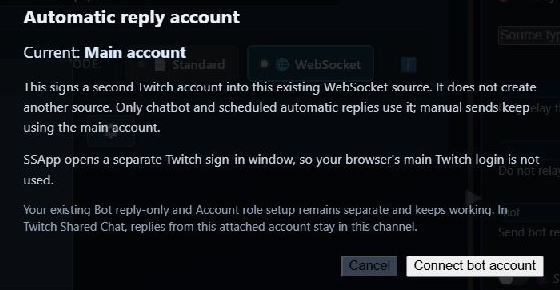

どちらの方法を使うべき？
どちらの方法でも、メインアカウントではなくボットアカウントから自動返信が表示されます。実現方法が異なります。
新しい追加アカウント方式は、SSAppデスクトップアプリのTwitch WebSocketソース専用です。 TwitchのStandardモード、他のプラットフォーム、ブラウザ拡張機能では利用できません。
| 方法 | 適した用途 | 追加ソースは必要？ |
|---|---|---|
| Twitch WebSocketボットアカウント | 最も簡単なTwitch専用設定 | 不要 |
| 独立した返信専用ボットソース | Twitch Standardモード、または返信できる他のプラットフォーム | はい |
方法1：Twitch WebSocketボットアカウント
これにより、既存のWebSocketソースに2つ目のTwitchログインが追加されます。 別のソースや永続的なブラウザーセッションは作成されません。
ヒント：画像をクリックまたはタップすると、原寸で開けます。
- SSAppでTwitchソースを探し、次が WebSocket 選択されていることを確認します。
- ソースの次をクリックします： 歯車ボタン.
- 次のセクションで： Twitch WebSocketの送信で、次をクリックします： 自動返信アカウント：メインアカウント（Automatic reply account: Main account）.

このセクションは、そのTwitchソースがWebSocketモードの場合にのみ表示されます。
- 説明を確認し、次をクリックします： ボットアカウントを接続（Connect bot account）.
- SSAppが独立したTwitchログインウィンドウを開きます。ボットの返信を送るアカウントでログインしてください。
- ログインが完了すると、ソースメニューが次に変わります： 自動返信アカウント：@BotName（Automatic reply account: @BotName）.

独立したログインウィンドウにより、通常のブラウザのTwitchログインが使われ、意図せず違うアカウントが選ばれることを防ぎます。
長所
- 2つ目のソースを作成したり、起動し続けたりする必要がありません。
- WebSocketソースが接続済みなら、ほとんど追加設定は不要です。
- チャットボットと定時の自動返信は、ボットアカウントを使用します。
- Twitch Shared Chatでは、ボットの返信はこのソースのチャネル内に留まります。
短所
- Twitchのみ。
- WebSocketモードのみ。
- 手動送信は引き続きメインのTwitchアカウントを使います。
- ボットはモデレーターである必要があります。そうでない場合、チャネル所有者が一度再接続してTwitchボットアクセスを承認する必要がある場合があります。
方法2：独立した返信専用ボットソース
これは従来のSSApp方式で、引き続き対応しています。2つ目のソースを作り、独自のブラウザセッションを割り当て、次の役割を持つソース経由で自動返信を送ります： bot 役割です。
以下の画像はTwitchを使用していますが、この方法はTwitch専用ではありません。ログインと返信送信に対応する、他のSSAppソースでも使用できます。
- チャット取得用の通常のソースを追加します。
- 同じチャネルまたはソースをもう一度追加します。SSAppが返信専用ボットソースにするか尋ねたら、次を選びます： はい.
- 2つ目のソースで、次を開きます： ブラウザセッション設定（Browser Session Settings） を有効にし、次のような独立したセッションを使います：
bot-account. - クリックする項目： ログイン を2つ目のソースで開き、ボットアカウントでログインします。
- 歯車メニューを開き、次を有効にします： ボット返信専用（取得なし）（Bot reply-only） を開き、次を切り替えます： アカウントの役割（Account role） 次の表示になるまで切り替えます： ボット（Bot）.

設定後の2つ目のソースには、次が表示されます： 返信専用（Reply only）, 役割：ボット（Role: Bot）と、上部の独立したセッションが表示されます。
- 右側の設定パネルをフルモードに切り替え、次を検索します： bot replies.
- 設定する項目： これらのSSAppアカウントの役割を通じてボット返信を送る（Send bot replies through these SSApp account roles） →
bot. - ボットソースを有効にし、返信が必要な間は起動したままにしてください。

入力する値： bot をこの欄に入力します。上にある2つの中継用の役割欄は別の設定で、空欄のままでかまいません。
長所
- Twitch Standardモードで動作します。
- 返信送信に対応する他のプラットフォームでも使えます。
- ボットソースは独自のブラウザセッションとソース操作を持ちます。
- アカウントの役割は、より高度な送信先の振り分けにも利用できます。
短所
- 2つ目のソースと独立したセッションが必要です。
- 送信するにはボットソースを有効にする必要があります。
- 同期しておく設定が増えます。
- 返信専用を無効にすると、2つ目のソースがメッセージを重複取得することがあります。
両方の方法を設定した場合
1つの返信経路には1つの方式を使ってください。次の場合、 これらのSSAppアカウントの役割を通じてボット返信を送る（Send bot replies through these SSApp account roles） の設定値： botの場合、独立したボットソースが優先されます。SSNは、接続済みのTwitch WebSocketボットアカウントから同じ返信を重ねて送信しません。
トラブル対処
- 新しいオプションがない： SSAppデスクトップアプリであることと、TwitchソースがWebSocketモードであることを確認してください。
- 接続したTwitchボットが送信できない： ボットをモデレーターにしてください。モデレーターでない場合は、チャネル所有者を使ってメインのTwitchアカウントを一度再接続し、要求される権限を承認してください。
- 違うTwitchアカウントが選ばれた： アカウントを選び直し、独立したSSAppのTwitchウィンドウでボットアカウントにログインしてください。
- 独立したソースから何も送信されない： ソースを有効にし、ボットとしてログインしていることを確認して、振り分け欄に正確に次が入っていることを確認してください：
bot. - 独立したソースがチャットを重複取得する： 有効にする項目： ボット返信専用（取得なし）（Bot reply-only）.
- 返信がまだメインアカウントから送られる： 接続したアカウントのユーザー名が表示されていること、または独立したソースに次が表示されていることを確認してください： 役割：ボット（Role: Bot）.